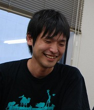
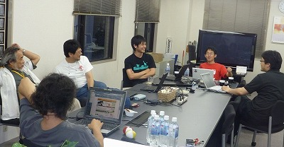
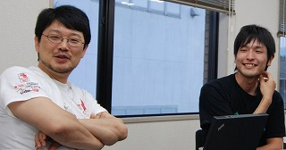
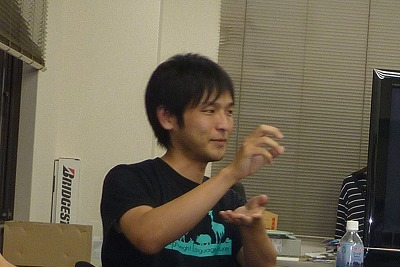

Rubyist Hotlinks 【第 22 回】 nari さん
はじめに
著名な Rubyist にインタビューを行う企画「Rubyist Hotlinks」。 今回は Ruby の最年少コミッタで GC の改善に尽力されている nari さんにお話を伺いました。お楽しみください。
プロフィール
 角谷さんの「Java から Ruby へ」のプレゼンをきっかけに Rubyist になった nari さん。RHG で GC に目覚め、独学で GC を学び、現在は Ruby の GC 改善のコミッタとなる。座右の銘は「あきらめない」。
- 好きな言葉
- あきらめない
- 尊敬する人
- まつもとさん、前田さん、Rubyのコミッタの方々、竹内先生、角谷さん、松田さん、高橋会長
- ご本人のサイト
- I am Cruby!
インタビュー
- 聞き手
- ささだ
- 語り手
- nari さん
- 野次馬
- まつもとさん、竹内郁雄先生、高橋会長 1、ごとうゆうぞうさん、角谷信太郎さん、松田さん、yhara さん、あんどうさん
- 日にち
- 2009 年 9 月 8 日
- 場 所
- NaCl
目次
プロフィール
: 
ささだ 今日は久しぶりのインタビューです。お忙しい中ありあがとうございました。 Ruby ワールドカンファレンスの終わった後にこんなことやってすみません。
nari いえいえ……、緊張します。
ささだ 今回はたくさん野次馬が来ています。まつもとさん、竹内郁雄先生、ごとうゆうぞうさん、角谷信太郎さん、松田さん。
まつもと 史上最多のギャラリーじゃないか。
竹内 史上最低のギャラリー (笑)
まつもと いや、最低かどうかは…… (笑)
(右の写真について：左上から角谷さん、竹内先生、yhara さん、ささださん、高橋会長、左下から松田さん、nari さん、ごとうゆうぞうさん。)
生年月日、出身地、現住所、家族構成
ささだ 生まれた年、出身地、現住所、家族構成。いずれも差し支えなければ。
nari 生年月日は、1985 年 3 月 21 日です。
ささだ 80 年代の人にインタビューするのは初めてなんじゃないかという気がします。
nari 出身地は福岡の八女っていうところで、お茶が有名な場所です2。
ささだ 福岡でお茶を作るんですか？
nari お茶作りますよ (笑)
まつもと 日本中、どこだって作るじゃんね。
ささだ 福岡では知らなかった。
nari あと、現住所は松江です。家族構成は、兄と母です。親父はいたんですけど、小五ぐらいのときに亡くなりまして。そんな感じです。
好きな言葉、座右の銘
ささだ 好きな言葉、座右の銘。
nari 座右の銘ですか……。座右の銘……。「あきらめない」とか、そんな感じ。
ささだ 普通ですね。
nari はい (笑)
まつもと それは座右の銘じゃないんじゃない (笑)。
ささだ 何かあるんですか、理由は。
nari や、あんまり特には無いんですけど (笑)。今まで考えると、あんまりあきらめてこなかったな、という。
まつもと いくら GC パッチをリジェクトされてもですね、いつかは。
nari いつか日の目を見ることを夢見て。
まつもと つらいよね。
nari つらいですね。
尊敬する人
ささだ 尊敬する人。
nari 尊敬する人は……。
まつもと ささださん。
ささだ まつもとさんが答えないでください (笑)
nari いっぱいいるんですけど。
ささだ どうぞいっぱい言ってください。
- nari まつもとさんと、前田さん。

まつもと 聞かなかったことにしよう。
全員 (笑)
ささだ これは何だろう、給料対策？3
nari いや違います (笑)
まつもと 僕、人事権ないから (笑)。そういう権利は奪われているので、リリースマネージメントと一緒で。
nari あと、Ruby のコミッタの方々です。
ささだ そう言っておけば、パッチが通りやすいと (笑)
nari いや (笑)。前田さんが直属の上司なんですけど、良く色々教えてもらってですね。ああ、すごい人だなというか、すごい人とはこういうことを言うんだみたいな。
竹内 上司と部下の関係があるわけね、NaCl には。
まつもと NaCl にはあります。あんまりそこまでフラットじゃなくて、二階層ぐらいは。社長、前田、中村。
全員 (笑)
竹内 社員が 3 人しかいないってことは無いでしょう (笑)
まつもと もうちょっといます (笑)
ささだ 他にいれば。
nari 他に……。誰でしょう……。竹内先生とか。
ささだ 遅いよ (笑)
竹内 よく言うよね。
全員 (笑)
竹内 明らかに、周りの雰囲気に言わされてるよね (笑)
nari 萎縮してるんです (笑)
まつもと 圧迫面接 (笑)
竹内 じゃあ、次は松田君ですとか (笑)
nari そうですね。松田さんと角谷さんです。
全員 (笑)
竹内 やっぱ帰らないでよかったね。
nari あと、高橋会長ですね。4
ささだ じゃあここで今、なんでとか聞いたら、困りますか？
nari それはちょっと。
代表作
ささだ 代表作。
nari 代表作……。あんまり、そんなに凝って作ったものは無くてですね。
ささだ ソフトウェアはあんまり作ってこなかった？
nari 細かいものは作ってきたんですけど。
まつもと nario 5。
ささだ nario。はいはい。
yhara なんで絶対復習を言わないの。
nari ああ、絶対復習が。
ささだ 絶対復習。それ、Web サイトですよね。
nari はい。
ささだ 趣味で作ったんですか？
nari あれは趣味です。夜寝てて、ぱっと起きてこれはイケる、みたいな。
竹内 かな漢字変換してもらえますか？
ささだ ぜったいふくしゅう？
竹内 「ふくしゅう」がリベンジなのかどうか。
nari あ、リベンジじゃないです (笑)
竹内 「絶対復讐」だと思ったよ。
まつもと 予習復習の復習なんですけど (笑)
竹内 予習復習だよね、やっぱり。
nari それぐらいですかね。あとは GC のパッチですか。代表作っていうほどじゃないんですけど。ささやかなものです。
ささだ 絶対復習って使ったこと無いんですけど、イケると思ったサービスってどんなサービスなんですか。
nari 自分が忘れっぽいのでどうにかしたいなと思っていて。それで本を読んだら、忘却曲線みたいなのが書いてありまして、一週間経つと 20% ぐらいしか覚えていないというのがあって、それにしたがって何回か復習していくというのを作って。それでずっと今やってるんですけど、だいたい覚えてるんで。
ささだ 忘却曲線とサービスの関係は？
nari 僕もよく覚えてないんですよね。
ささだ いやいやいや (笑)。毎日使ってるんでしょ？
yhara そこは復習してなかった？
nari そこは復習して無かったですね。
全員 (笑)
nari 登録した復習内容を、一日後と、一週間後と、一ヶ月後と、半年後に教えてくれるんですね。それでそのたびに復習して、知識を定着していくっていう。
ささだ こんなことを勉強したよというトピックだけを入れておいて、勉強した内容自体は、自分でやると。そろそろ復習するんじゃないのというサービスを作ったと。
nari そうです。
ささだ それで色々な GC のアルゴリズムを復習している……、わけではない？
nari はい。してます (笑)
ささだ 何に使ってるのかなと思って。
nari なんですかね？英語の意味とか。最初の頃はやっぱり GC のアルゴリズムをやってました。
ささだ 最初の頃にそういうことをやって、後は？
nari あとは、英語とか。あ、卜部さんの「O(1) の Hash を作るには」6とか、そういうやつですね。後は「宴もたけなわ」の意味とか。
角谷 英語ですか？
nari いや、日本語の。
全員 (笑)
竹内 でも「宴もたけなわ」の「たけなわ」を漢字で書ける人はほとんどいないと思いますよ。
全員 (ここでみんな漢字を調べ始める)
まつもと 2 つあるみたいですね。
竹内 酒には酒が甘くてもいいんですよ。
まつもと 酒に甘いでもいいし、門構えに東みたいな字でもいいと。7
ささだ nario はまだやってるんですか。
nari nario はあんまりやらないようにしていて。
ささだ え、なんで？ 京都の方からいろいろ言われたくない？(笑)
nari あんまり蒸し返したくないというのがあって、あんまりやらないというのを会社の中で宣言してて……。黒歴史みたいな (笑)
ささだ 会社でやるのはどうかと思うけど (笑)
nari 会社で、そういうプレゼン 8 はいたしません、みたいな。
ささだ 誓約書を書かされて？
nari そういうわけじゃないですけど (笑)。昼ごはん食べながら、そういう話をして。
yhara まあ、社会人ですからね (笑)
著作
ささだ 著作。本でも記事でも。あ、るびまで記事を書いてくれましたね9。ありがとうございました。
nari るびまの記事が初めてですね。
ささだ そうなんですか。何度でも書いてください。
nari はい。本は今度出させていただけることになったので。
ささだ GC の本？
nari GC 本です。
まつもと GC 専門本はあんまり無いんですからね。
竹内 本当に無いです。リチャード・ジョーンズの本 10 が唯一じゃないですかね。

まつもと 日本版ジョーンズ？
nari あんまり僕、アルゴリズムに詳しくないんで、本の中では実装編を 6 割ぐらいにしようかなと思って。実装を紹介するんですけど、実装を結構多めに取って。
ささだ ペーパーの紹介とかは、4 割ぐらい？
nari そうです。
ささだ 書くきっかけはなんだったんですか？
nari きっかけは、blog にですね、酔っ払いながら 「GC 本が無いんだけど、誰か書かせてくれませんか」っていうのを梅酒を飲みながら書いたんですけど(笑) 11。そしたら、次の週ぐらいに「本を書きませんか」っていうメールをいただいて。
ささだ おー。
まつもと じゃあ、何か書きたいものがあったら blog に書けと。
nari blog に書くと、拾ってくれる人がいるかもしれないです。
ささだ まぁ、GC の本を書きたいと言う人はいないですよね。買いたいって言う人もどれぐらいいるか分からないですけど (笑)
全員 (笑)
まつもと それは大きな大問題 (笑)。僕は買うから。
ささだ 僕も。献本もらえる気がするけど。
まつもと わかった、献本もらっても買うわ。献本は貰う。
全員 (笑)
ささだ 会社用と家用と。
nari 是非是非。ここで 10 部ぐらい (笑)
全員 (笑)
ささだ 宣伝しておいた方がいいですよ。
nari えーと、買ってください。
ささだ いやいや、何か売り文句とかは。
nari 売り文句ですか。
まつもと 出たら買ってください。
全員 (笑)
ささだ これがいいよとか、こう言う人は買った方が良いよとか。Rails アプリケーション作るときは、これを読んでないと、とか。
まつもと 違うだろうな (笑)。GC を実装する人は買った方がいいよね。
全員 (笑)
ささだ 日本に何人いるんだ (笑)
nari Ruby とかから入った人は、多分メモリをあんまり意識しないで使っちゃったりすると思うんで、その辺の人とか、イメージできて良いかなぁと思って。
ささだ 結局、GC があってもメモリを気にしないとダメだと。
まつもと パフォーマンスに悩む Java プログラマは買った方が良いかも知れない。もちろん、VB プログラマも。なぜ、ここで何もしていないはずなのに遅いのか。GC じゃん、というのが分かるかも知れない。
nari そうですね。
ささだ 大学の授業とかでも買わせた方がいいんですか。
まつもと 大学で GC の授業をしているところあるの？電通大？
竹内 GC は私は教えてたよ。大学の授業で。
ささだ まえ、和田英一先生が、非常勤で電通大に来られたことがあって、そのときにもぐったら、GC の授業をやってました。
まつもと 素晴らしいね。
nari すごいですね。
ささだ 自分で GC を書いて、色々 Lisp でこうやって、っていう話を。
まつもと 筑波で集中講義をしたときに、GC ちょっとやりましたよ。皆に ID 持たせて、まずリファレンスカウントでやってみましょうって。自分のリファレンスカウントが 0 になった人は席に戻ってくださいって。
竹内 なんと面白いことを。
全員 おー。
竹内 人をゴミ扱いにするという (笑)
全員 (笑)
まつもと あの人は見事生き残りましたとか言って (笑)。じゃ、次の 10 人出てきてくださいとか言って、また ID 振られて。で、今度は Copy GC して見ましょうって、こっちに移ってくださいって(笑)。
ささだ じゃそんな感じで、教科書指定すればよい。そうすれば学生が買うじゃん。
まつもと そういう授業で。じゃ、ささだ先生が教科書指定で。ゼミで。
全員 (笑)
まつもと 何人いるんだ (笑)
竹内 去年なんか、3 人しか授業を受けてなかった (笑)
まつもと それじゃしょうがない (笑)
nari じゃ、3 部売れますね (笑)
まつもと でもね、いまどきは小部数出版になってるからね。
ささだ でも RHG が 2500 冊らしいので。まあ、いまプレミアついてますけどね。非常にいい本なんだけどすぐ売り切れちゃって、さすがにもう 1 回出しても売れないだろうということで出さなくて、15000 円くらいになってるらしいんです。 Image not found. ISBN = 978-4844317210
ささだ でも web で全部公開しちゃってるからね 12。じゃあ、それを目指すと (笑)
まつもと それを目指すということでいいのか？ (笑)
nari じゃあ、初版で売れなくて web で公開すると。
ささだ それでマーケットプレイスですごく高く売れて 2 冊持ってる人がウハウハになるとか。
まつもと うっへっへ (笑)
ささだ wiki 作ってましたよね？ GC の wiki 13。あれは何か関係あるんですか。書籍の話と。
nari いやー、あんまり。執筆を依頼していただいた編集者の方はご存じでしたけど。
まつもと いや、関係が無いわけはないよ。
ささだ これだけ書いている人だったらまかせても良かろうと。
nari そういう話なんですかね。あと、Ruby の GC の話を本に書こうと思ったんですけど。でも Ruby の GC って、RHG に載っているので、それは止めてですね。
まつもと えっ (笑)
nari どきっ (笑)。それでですね、Rubinius の GC を今書いてます。
まつもと またマイナーな。
ささだ 多分、来年には変わってるよ。
nari Copy GC の部分だけなので、そこぐらいだったら変わらないんじゃないかなぁと思います。
ささだ Copy GC って、結局 copy-on-write friendly じゃないじゃないですか。で、散々何か copy-on-write friendly いいよいいよとか言ってる人たちがいて。
まつもと 良くわかんないよね、あれ。何だろうね。
ささだ その点から見ると、Copy GC って絶対ダメじゃないですか。
まつもと ダメだね。何を言ってるんだろうね。みんな自分の立場から好きなことを言うからね。
ささだ まぁ、Rails のお客さんが大事じゃないですか、色々。
nari 今日も Jeremy Kemper さんが言ってましたね、プレゼンで 14。
松田 むしろ、お客さんを突き放すようなことしか言ってなかった気が。
nari copy-on-write が入ればいいかなぁとか。
ささだ で、どうやってプロファイリングとか取ってるのとか聞いたら、1.8 の RubyProfile でやってるとか言われて。1.9 でやってないんだみたいな。
好きなメソッド、嫌いなメソッド
ささだ 好きなメソッド、嫌いなメソッド。あ、そうだ、2004 年の 8 月に最初のインタビューをしたんですよ。それから 5 年ぶりですね、ちょうど。
まつもと ああ、それぐらいだったかねぇ。
ささだ 私が最初のインタビューで初めてここ (松江のNaCl) に来て、ここでやりました。5 年間、俺同じ質問してる！
まつもと まぁね。そんな変わるもんじゃないから。
yhara セカンドシーズンですね。
ささだ 2 周目。松江から。
まつもと 好きなメソッドは？ObjectSpace.each_object ですとか。そんなはずは無い (笑)
nari ObjectSpace.each_object ですかー (笑)
まつもと 発狂するようなメソッドだよね。
nari ObjectSpace って、何で入っちゃったんですか。経緯みたいなのは。
まつもと いや、ObjectSpace が必要だったから。
ささだ 必要じゃないでしょ、作れちゃったからでしょ、あれは。
まつもと うん、作れたから。
ささだ Continuation と同じで。きっと。で、他の処理系を実装している人たちが困る。
まつもと っていうか、GC に関するメソッドを入れるところは要るじゃん。で、ObjectSpace。
ささだ でも、GC っていうクラス15があるじゃないですか。GC 関係は。
まつもと GC っていうクラスは、最初は無かった。
nari へぇー。
ささだ ああそう。だから、ObjectSpace.gc_start でも良かったかもしれない。
まつもと ObjectSpace.garbage_collect っていうメソッドあるぜ。
ささだ えっ！
全員 (笑)
まつもと 昔っから。
ささだ 何するんですか。
まつもと いや、ガベージコレクトをするに決まってるじゃん(笑)。GC をスタートするに決まってるじゃん。
ささだ あ、全然知りませんでした。
yhara どうして GC モジュールが出来たんですか？
まつもと なんだったかな……。enable とか disable とかつけるのに、ObjectSpace につけるのはおかしいって話だったのかな。考えてみれば、ObjectSpace.gc_enable とかにすればよかったかもしれないけど。
ささだ 何か、2 文字って少なすぎますよね。
まつもと すみません。GC が好きなんです。
全員 (笑)
ささだ この間、田中哲さんがプロシンで、短い名前より長い名前を先にした方が良いという話をしてたじゃないですか。
竹内 あー、言っていましたね。
ささだ 先に長い名前にしておけば、後で短く出来るからっていう。
yhara GarbageCollect モジュールの方がよいと。
ささだ いや、分からないけど。そうすれば誰も使わなくなるから。
nari 僕が困る気がします。
ささだ 一人が困るのは良いんだよ。
nari あ、好きなメソッド……。GC.start。
角谷 予定調和的な (笑)。言わされてる？
竹内 自分で陽に GC を始めるってこと？
nari そうですね。
まつもと それは悪手じゃないのか？もしかして (笑)
竹内 暇そうだから？
まつもと そうそう。
竹内 昼飯行くから GC.start とかやって。
ささだ ゲームプログラミングだと、フレームの単位で、フレーム処理が終わったら GC してっていう風にやるそうですね。と、星君が言ってました。
まつもと もうここは暇だってはっきり分かってるときに、GC かけるってことかな。
nari アプリケーション書いている人しか、暇なところが判断しづらいと思うんで、GC.start は結構僕は好きかもしれません。
ささだ でもさ、GC 実装者としては負けじゃないの、それ。
まつもと そう、負けな気がする。
ささだ 自動的に勝手にメモリ管理してくれるってのが大事なんじゃないの？
まつもと いかに賢く出来るか。
nari そうですよね……。
ささだ まぁ、でも好きだと (笑)。じゃ、嫌いなメソッド。
nari GC.disable じゃないですか。
まつもと 止めちゃダメなんだ (笑)。
全員 (笑)
まつもと でも disable はほんとに負けな気がする、たしかに。
竹内 disable ってどういうこと？
まつもと このリージョンではメモリがいっぱいになっても必ず GC はしない。
竹内 いっぱいになったらどうすんの？
まつもと もう落ちるしかないですね。MemoryFailure で。
竹内 ObjectSpace を増やすってのは無いの？ ObjectSpace.increase とか。
まつもと それは勝手に malloc でメモリ空間から切り取ってくるんで、どんどん膨れ上がるんですけど。
竹内 GC はしてほしくないと。それが disable ですか。
まつもと disable です。すごい負けな気がする。たしかに嫌いだ。
Ruby に関して
Rubyist になったきっかけ
ささだ Ruby について。Rubyist になったきっかけ。つーか、Rubyist なの？あ、そっか、Ruby 検定受けてましたよね。
nari 認定されました16。
ささだ 認定された。
まつもと 仕事でも Ruby 書いてるし。
nari きっかけはですね、前の会社では 2 年ぐらいずっと Java を使ってたんですけど、Ruby っていうのがちょこちょこニュースとかで出てきてですね。で、角谷さんのプレゼン動画を見たんですよ。
ささだ おっ。いないじゃん今！17 何て人だ (笑)。何のプレゼンですか？
nari Google Video に入ってるやつなんですけど……。
ささだ いつ頃の？
nari 2 年ぐらい前じゃないですかね。
ささだ デブサミかなんかすかね。
nari いや、デブサミじゃなかったですね。
ささだ 2 年前……。今、角谷さん褒められてますよ。
角谷 えっ。なんですか。
ささだ なんか Ruby を始めたきっかけが、2 年ぐらい前に角谷さんのプレゼンを見たことだって。
角谷 ありがとうございます。
nari Google Videoに……。
ささだ で、なんのビデオかと。
角谷 サッカーじゃなくて？
ささだ サッカーじゃなくて (笑)
角谷 Google Video に上げてた頃は大分昔ですね。
nari あ、社内向けの「Java から Ruby へ」です。
角谷 ああ、あの話。おおー。
ささだ あの本18を書いた後で？

角谷 出す前ですね。間に合わなくて。
ささだ これ19ですね。
角谷 おおー。品川でやってた奴ですね。恥ずかしいから再生しないで (笑)
全員 (笑)
角谷 いや、おかげで GC のコミッタが釣れたという (笑)。貢献してる、俺 (笑)。Ruby の開発に貢献した！
ささだ それを見て、Ruby が良いなと。
nari はい。
ささだ そこで普通さ、Ruby で書こうってなるよね。
nari 最初は書いてたんですよ。最初は Rails で何か作ったんですよ。
ささだ 趣味で？
nari はい。UFO を捕まえるようなアプリケーションを作ってですね。
まつもと やっぱりゲームなんだ。
ささだ Rails で？
nari Rails で。
ささだ Web アプリで UFO つかまえるの？
nari Google Map に UFO が乗ってですね、瞬間移動するんで、そこの座標に行って捕まえると言う。それをやりましたね。あと、ホワイの (感動的) Ruby ガイドを読んで、すごいなーと思って。
ささだ なるほど。
nari それがきっかけですかね。
ささだ で、思い余って NaCl に来た。
nari そうです (笑)
現在の Ruby との付き合い
ささだ 現在の Ruby との付き合いを教えてください。
nari ほぼ Ruby というか、仕事でも Ruby を使ってますし。家でも……家ではそんなに使ってないですね、今は。前は使ってましたけど。でも、GC についてどうにかできないかなっていうのを考えたりするようなポジションですかね。
ささだ このタイミングしかないような気がするので。何かアイデアがあれば。Ruby の GC について。
nari なんか、ゲームのライブラリを作ってる人の blog20 でですね、結構止まるっていうのがちょこちょこ載ってて。それはどうにかしてあげたいなと思うんですけど。
ささだ では、パフォーマンスはあんまり気にしないんですか？ GC のモチベーションって、今どこにあるんですか？ 何したい？
まつもと たたみかけるような質問ですね。答える間がない (笑)
nari 僕のですか？
ささだ うん。何をしたいの？
nari なんでしょう。何がしたいんでしょうね。あ、でも普通に GC について知ったり、アルゴリズムについて知ったり、こういうやり方もあるんだって、それの目標は Ruby の GC にどうやって改善していくかみたいな。
ささだ 改善の方向って、色々あるじゃん。
nari まず、手近なとこだと、LazySweep 入れたいなと思ってます。
ささだ じゃあ、リアルタイム性をあげたいとか、スループットをあげたいとか。
nari 選択できるのがいいかな。
ささだ ああ、選択可能にしたい。
nari はい。
ささだ おー、GC アルゴリズムを変えられるようにしたいと。
nari したいです。
ささだ なんか、EngineYard の人たちが喜びそうですよね。
まつもと うん。でも大変だよね。
ささだ 竹内先生が GC 作ってたときは、GC はこれだけっていう感じだったんですか？それともなんか選べるように作ったんですか？
竹内 いやー、もちろん 1 つだけですよ。私が作ったのは 10 年以上前ですけど、ポーズタイムは 100 マイクロ sec 以下ですからね。しかも、まだメガヘルツの時代ですよ。60MHz のマシンですよ。ようするに concurrent GC なので、GC のプロセスだけで全部で 8 つ走るんですよ。
まつもと えっ？
竹内 普通の意味で言うとスレッドなんだけども、マーキングのスレッドが 2 つと専用のデータタイプ別コレクションのスレッドが同時に走って、必要なやつからどんどん、どんどん足りなくなったやつから優先度で走るわけ。で、GC のマーキングが 2 つあるのはですね、snapshot at the beggining じゃなくて、dynamic のやつな方なので、ようするに pointer が付け替えられたときに、snapshot は前のやつを取っとくでしょ？
まつもと とりますね。
竹内 でもそれは無駄だからやらなくて。どっちかっていうとすぐゴミになりそうなもんじゃない？だからそれはやらなくて付け替える先のものをマークするというそういう方式なんですよ。そっちの方が基本的にコンサバティブじゃないのでゴミの出る確率がすくない。というか、ゴミの回収効率が高い！
まつもと まあ、仕事は減りそうですね。
竹内 そのためにどうしてもですね、尻拭いのマーキングってのが必要になって、尻拭い専用のマーキングプロセスがあるんですよ。そこでほんちゃんマーキングと尻拭いマーキングのバランスが悪くなると、尻拭いが走って、尻拭いのやつを少し負荷を減らしてからまたほんちゃんマーキングが走るようになってるんです。
ささだ それをコンカレントで管理してという。
まつもと 正直発狂しそうなんですけど、実装する方は (笑)
ささだ GC するまえにガーってやるのかと思っていました。
竹内 そんなことない、そんなことない。普通に dynamic にやってた。スケジューラは GC の残りのメモリひっぱぐために GC 中は優先度を dynamic に変えるんですよ。だから非常にメモリが足りない！しかしもう速く終わらないといけない！というときはどんどん GC の優先度が高くなっていくわけ。
ささだ なんか、プロセッサから OS からすべてのレイヤを作ってたからこそできるっていう。
竹内 そうそうそう。だからプロセッサステートワードに GC に関する bit があるわけですから、ブランチがただでできる。
nari たしかに。そうですよね。
ささだ 書かないと、本に。
nari (笑)
竹内 あ、後で論文送ってあげます。読むのしんどいと思いますけど。
nari ぜひぜひ。
まつもと タイプタグとかあったんですよね？
竹内 もちろんあります。だから GC のマーキングは 64way branch なんですよ。データタイプごとにズボって 1 発あるんです。だから今のパイプラインじゃ無理ですね。
まつもと そうですね。
竹内 だから 60MHz のマシンでそんなスピードが出るんですよ。
ささだ だから、それ 1 個でいいっていう判断だったんですね。アルゴリズムを変えるというのは、ハードウェアだから変えるのがしんどい？
竹内 だからそれは変える意味があんまりないんですよ。それが 1 つあれば。ベストのものを 1 つ作ればそれで終わりなんですよ。
ささだ GC でベストのものってなかなか言いづらいですよね？
まつもと 上から下まであるから言えることだよね。
竹内 だからね、OS に非依存で作らないといけないとか言うと大変だよね。
まつもと すいません、死にそうです(笑)。なんか、湯淺先生と話するとそんなの簡単じゃんって言われるんですけど、どうしたらいいんでしょうか (笑)
竹内 いやー、私はあんまりそういうとこには突っ込みたくないなぁ。
ささだ 簡単って何が？
まつもと いや、ライトバリア作って、速い実装書くのって簡単じゃんっとかって言って。いやー、どうしたらいいんだろうかって (笑)
竹内 私は GC は昔から密接ですけども、Virtual Memory と同じで、ハードウェアサポートが無いとやってられない、だからもう OS の下からやらないとというのが私の持論。だっていくらでも速くできるんだから。
まつもと GC のある OS って無いですよね。
ささだ って、なんの話でしたっけ (笑)
まつもと 全然インタビューになって無いじゃん (笑)
ささだ そうか、モチベーションの話をして、selective にって話でしたね。インクリメンタル化したいんだっけ？
nari したいです。
まつもと 割とゲーム畑の人だから、やっぱりリアルタイム性っていうか、ポーズタイムが気になる。
nari 気になりますね。
ささだ スループットはあまり気にしない。
nari うーん。
ささだ サーバー系のアプリケーションって、リアルタイム性って要るんですか。要するに GC で止まって欲しくないとか。
松田 あんまり無いんじゃないですかね。そんなピンポイントで止まるって言うのは。
ささだ ひとつのリクエストが 1 秒かかっちゃったみたいな。そんなの気にしない？
まつもと あんまりひどいとあるとは思うけど。Web 系はスループットが重視されるんじゃないかなぁ。
ささだ ライフゲームのインタラクティブ性よりは、ライフゲームが何回進化できたかみたいな。
まつもと ライフゲームで言うの、それ。まぁ、いいけど (笑)
ささだ まつもとさんの論文にはいつもライフゲームでの評価が出てくるから。
まつもと すみません。そういう意味でね (笑)。僕はスループット主義。
竹内 るびまの初心読者のために教えて欲しいんですけど、Ruby の GC って、どういうアルゴリズムなんですか。
まつもと すっごいシンプルな Mark & Sweep です。
竹内 インクリメンタルでもなんでもなくて？
まつもと なんでもないです。
竹内 LazySweep もやってない。
まつもと LazySweep もやってないです。彼 (nari さん) はそういうパッチを書いてるんですけど、まだ取り込まれてない。バグが取れないとね。
竹内 LazySweep なんて、物凄く簡単……、あ、でも簡単でもないか。
まつもと いや、簡単は簡単ですし、パッチもそんなに大きくなかったよね。
nari バグは一応直ったんですけど。
- まつもと そうなんだ。じゃ、入れようか。

nari (笑) オプションで選択できるようにしてからにしたいなーと。
まつもと なんでオプションにするの。LazySweep にして不利なことってあった？
竹内 マークビットが立ったやつがあったままで、ミューテーターが走らないといけないんで。そいつをどうするかだね。めんどくさいでしょ、それは。
ささだ どれくらい Lazy にやるかで、ある一定区間は足りなければまとめて Sweep してっていう風にやれば、その問題はたぶんないので。
まつもと Ruby の GC でやってるのは、スタックが深くなりすぎたときに、再帰をあきらめちゃうっていう Knuth のアルゴリズムだけは入れてるんですけど。
竹内 うわー、そんなことやってるんだ。
まつもと Ruby の場合は、物凄い長いオブジェクトのチェーンとか作る人がいるんで21、再帰でやってるとスタックオーバーフローとか言われちゃうんで。その、Knuth のアルゴリズムだけは入れました。そこであきらめてしまって、今マークがあるところから、もう一回 Mark & Sweep を再開すると言うアルゴリズム。
竹内 分かりました。
ささだ 私もどちらかと言うとスループット派です。インクリメンタル化すると遅くなるじゃん、ベンチマークが。
nari そうなんですよね。遅くなるので、オプションで出来る人だけ出来るようにして、通常はそんなに遅くならない。
ささだ でも、ライトバリアの有り無しを選択するのって大変じゃない？起動時に。
nari ライトバリアの有り無しのオプション？
まつもと LazySweep はライトバリア要らないでしょ？
ささだ LazySweep は大丈夫ですけど、ちょっと遅くなるかな。
まつもと 遅くはなるけど、ライトバリアは要らないでしょ。
ささだ Mark まで考えたら、ということ。Mark はライトバリアかリードバリアが要るじゃん。
nari インクリメンタルはそうですね。
まつもと そっちは大変。
ささだ (角谷さんに) あ、もうお帰りで。お疲れ様です。何か聞いておきたいこととかありますか。
角谷 GC は外国人が気にしてるのでがんばってください。
nari はい、わかりました (笑)
ささだ 彼らはなんであんなに気にするんですかね。
角谷 すごく、「GC tuning! GC tuning!」って言ってますよね。
ささだ Ruby on Rails やってる人たちは、みんな GC、GC って言ってて。GC 知らないくせに。
竹内 そこで反応がパカッと止まるってこと？
まつもと 何なんだろうね。
ささだ なぜなのか、よく分からないですけど。
松田 エンタープライズエディション 22ってやつをわざわざ作って、GC のチューニングを変えてて 23。それで Twitter が 30% 速くなったとか言ってましたね 24。
竹内 良く分からないな。なんで GC が関係あるんだろう。
ささだ Ruby on Rails で Twitter を作ってたんで、そこでパフォーマンスが改善したって話だと思うんですけど。
松田 GC をチューニングしたら 30% 速度向上したぞ、と。
竹内 何の速度なんですか。何を速度といっているのか。投稿してから、皆のところに出てくるまでの速度なのか。
ささだ それか、1 時間に何リクエストさばいたか。
竹内 さばける数か。GC が延々と走ったらやっぱ遅くなると。
まつもと どうなんでしょう。
ささだ 例えば、fork できる限界ってメモリ優先度によるので、それが copy-on-write friendly にすると、たくさんプロセスが出来てスループットがあがったっていうのがありそうな。
竹内 そういうあがり方ね。
ささだ 無いですか？
まつもと 無いとは言わないけど、良くわかんないな。自分で見てないし。それは確かにそういう人がいるよね、ぐらいしか言えなくて。
ささだ ちょっと真面目に取らないとなと思って。アプリケーションどうしようっていう。
まつもと あの辺が謎なんですけど。copy-on-write friendly パッチが遅くなる。
ささだ 今ちょっと、その辺を速くするのは作ろうと思ってて。
まつもと どうやって？
ささだ 昨日言ってた、mmap がどうとかそういう話で。4KB 境界にするから。
まつもと そうか、4KB 境界にするから、ビット操作でだせるって？
竹内 去年の研究会の発表ね。
まつもと 発表みたいな無駄なことはやらずに、もっと。
竹内 何が無駄だったの？
まつもと 境界が分からないので、境界の部分にあたるワードに、先頭を示すインダイレクトなポインタを置きましょうっていう。
竹内 あー。
まつもと すべてを malloc でアラインして……。
竹内 なんでそうしないのかなと思ってたんだけど、4KB だったらちょっとぐらい端っこの 2,3KB ぐらい無駄があってもいいじゃないとかって、あの時は私もそう思った。
まつもと ちゃんとアライメントとるポータブルなのが無かったとか言う話かな。
ささだ posix_memalign があるじゃないですか！ POSIX ではできるので。Windows じゃできないとか言ってるけど、とりあえず POSIX で評価とらないと。
まつもと それって、ささだ君のパッチだと、VirtualAlloc でやったとかじゃなかったっけ？それはアライメントあるの？
ささだ はい。基本的にページ単位なので。
まつもと じゃ、その問題も無いのね。
ささだ はい。で、その辺をちょっとやってみて、ほらすごいだろうって言ってみようかなと。
まつもと copy-on-write friendly にしたよって？
nari いいですね。
ささだ で、停止時間の話なんだけど、最近だと、Java の GC をインクリメンタルにしてるじゃないですか。エンタープライズなサーバで。何十ギガもつんでるマシンだと、停止時間が馬鹿にならないからとか。それだとやっぱりインクリメンタル GC が要るんじゃないかな？サーバマシンでは。
まつもと ポーズタイムそのものが結構馬鹿にならないからね。。
ささだ 5 秒とか待つらしいよ。
nari そうなんですか。めちゃめちゃでかいメモリ。
まつもと ギガバイト単位でメモリがあれば時間かかるからね。
nari Java にコンカレントの奴があるじゃないですか、すでに。Java 7 で入った、G1GC でしたっけ。
ささだ そのためのはずでしょ、確か。
nari そのためです。でも、その前にコンカレントなGC25がありましたが……。
ささだ 2000 年か 2001 年の。
nari あれだとダメだったんですかね。
ささだ 何かその辺は良く分からないので。
まつもと コンカレントって言ってたやつも、結局は単なる世代別 GC だったので。マイナー GC は問題ないんだけど、メジャー GC がおきたときに、同じことがおきて、フル GC で例えば 5 秒止まるのは、受け入れられるかって話で、それはダメじゃんとかいう話でなかったかな。
nari フル GC はコンカレントでは無かったですね。
まつもと そうそう。で、G1GC は、何だか良く分からないんだけど、メジャー GC って無いんだよね、あれ。
ささだ 世代別 GC なんですか？
まつもと 世代別……、セグメント別っていうのかな。
nari 割合を見てそこに退避して、みたいな。
まつもと 良くわかんないんだけど、ライトバリアで、どのぐらい生きているかの大体の目安を取ってるんで、一番ゴミが多そうなセグメントがマイナー GC するとかいうアルゴリズムなんだわさ。
nari 論文26読んだんですけど、わかんなかったですね。
まつもと 僕も。で、なんか G1GC 特許取ってるしさ。
ささだ Ruby には入れらんない。
nari 本に書いて良いんですかね。
まつもと 説明する分にはいいんじゃない？
ささだ でも、特許とってるって書かないといけないのか。
まつもと その情報はあった方がいいよね。
ささだ クックパッドの人に、memory usage で困ってないんですかって聞いたんですよ。聞いてみたら、「クックパッドのマシンは、メモリ 16 ギガ載せてるので、全然メモリ困ってません」とか言われて。
- 全員 (笑)
- 
まつもと GC しないんじゃないの、もしかして (笑)
ささだ copy-on-write friendly とか要らないですとか言われてしまって。
nari GC が要らない世界って来るんですかね。
まつもと それはさすがに。僕が生きている間には来ない気がする。
ささだ 昔、ジョークで「ハードディスクが 1GB になったときに、全部ハードディスクに入れちゃえばいいから要らないよね」っていうのがあった。
まつもと 1TB になっても、まだ GC っぽいことはあるしね。
竹内 あるでしょう。無駄遣いする人いっぱいいるから。
Ruby の好きなところ、嫌いなところ
ささだ Ruby の好きなところ、嫌いなところ。
nari 好きなところは、やっぱり使ってて書き易いというか、気持ち良いというか。その辺ですかね。あと GC が僕でも改善できそうなところとか。
ささだ GC がダメだってこと？
nari いや、ダメじゃないですけど (笑)。僕なんかでも改善できそうな余地がありそうな。
ささだ Ruby の嫌いな所は。
nari GC に関しては、いじれそうなんですけど、実際にいじるとすごい難しいっていう。
全員 (笑)
ささだ 下手にいじると、何か怒られるし。
まつもと 僕は怒らないよ。
nari 嫌いじゃないですけど、そんなところです。
Ruby を使った成功事例
ささだ Ruby の成功事例。本が書けたぜ。
nari ああ、本が書けました。「本を書くよ」って偉そうに地元の友人に言ったんですけど。そしたらその後「先生、先生」って感じでビールを注ぎに来てですね。冗談でこびを沢山売られました。
ささだ ああ、そうか。これから私も先生ということでやんなきゃいけないと。お酌しなきゃいけないんですね (笑)
nari まさか自分が本を書くとは思ってなかったので、5 年ぐらい前までは。
まつもと 5 年前って、19 歳？
nari はい、まだ工場にいたときです。
ささだ 同人誌とか。
nari 同人誌 (笑)
Ruby のキラーアプリケーション
ささだ Ruby のキラーアプリケーションとかあります？使ってる方。他人のでも、自分のでも。
nari あー、Sinatra とか結構。キラーアプリじゃないですけど。自分でちょこっと作るにはすごい良かったり。最近は Sinatra が結構好き。
ささだ へー。流行ってますよね。
Ruby の習得
ささだ Ruby の習得はいかがでしたか。
nari Java から入ったんで、全部オブジェクトっていうのが良く分からなくてですね、その辺がわかんないなーと思いながらやってました。クラスはあるんですけど、オブジェクトってどういうことなんだろうっていう感じでした。でも、あんまり今も分かってない気はしますけど。
ささだ GC のことが分かっていれば、大体どんなゴミがあるか分かってるんじゃ。
nari (笑)。中を知って「あー」みたいな感じ。
ささだ なるほど。
一般人の Ruby に対する認識
竹内 全然関係ないけど、昨日会場からバスでホテルまで送ってくれた運転手さんとずいぶん親しくなったんだよ。で、その運転手さんが「この Ruby なんたらカンファレンスってのは、Ruby の会ですよね。」って聞いてきたから「そうですよ。」って言ったんだけど、どうみてもあの Ruby だと思ってるわけ。
まつもと 宝石ね。
竹内 宝石の Ruby。なんかね、宝石を磨く技術に関する会だと思ったらしいんだよ。で「カンファレンス」の意味がわからなかったから辞書を引いたんだよ、彼は。そしたら「会議」だから、「Ruby の磨き方に関する会議ですよね」って言われて、うーん……と。だから、一般人はそうらしいんだよ。
全員 (笑)
まつもと あ、でもそうだと思いますよ。昔、中京大学で公開講座したんですけど、地下鉄にポスターを貼ってたらしいんですよ。そしたら問い合わせが来てですね、「あのー、私も聞きたいんですけど、宝石の鑑定ができるようになるんでしょうか？」って。
全員 (笑)
まつもと ちょっと誤解は深いなと。
竹内 深いね。
まつもと Python とかにしとけばよかったですね。
全員 (笑)
まつもと 逆にヘビ好きなんですけど、って人が来そうだな (笑)
ささだ まあ、確かにあの宝石を見ても、プログラミング言語とはわかんないですよね。
まつもと プロが見るとこれは Ruby のカットじゃないって思うんですけどね。ブリリアントカットでダイヤモンド用でしょって突っ込みが。
竹内 遠くから見ると何にもわかんない？
まつもと ソフトウェアとはわかんないですね。
あんどう それらしい情報が無いですよね。
まつもと なんて不親切な (笑)
竹内 Ruby を削るテクノロジーの会議で Ruby の標準化の話をして 27。あ、Ruby のケーススタディは、Ruby をどんな箱に入れればいいかを検討する会だね。
まつもと どうしよう (笑)
全員 (笑)
プログラミング全般
初めてのプログラミング
ささだ 初めてコードを書いたのはいつぐらいですか。Ruby じゃ無くて一般的な話。
nari 多分、高校一年生ぐらい。ポケコンを貰ってですね、学校から。そのポケコンで BASIC を書いたっていうのが初ですね。じゃんけんゲームか何か作ったんですけど。それが初だと思います。
ささだ すぐ飽きた？
nari 飽きました (笑) そこからは全然やらなかったですね。
ささだ で、お仕事でプログラミング？やってたからお仕事を選んだっていうわけじゃなくて？
nari あ、その時のことを思い出して転職した、という感じですかね。やっぱり面白かったんだなぁというか。
ささだ じゃんけんゲームが？
nari 中学校ぐらいのときにパソコンを買ってもらったんですよ、すごいおねだりして。当時はすごい高くて、30 万ぐらいしたんですけど。
ささだ したした。
nari すごい無理して買ってもらったんで、何かやろうと思ったんですけど、ネットにつながってなくて。
ささだ 中学っていつぐらい？
nari 10 年前ですね。まだ ISDN だった時代です。うちの田舎は ISDN が来てなくてですね、電話線でネットやってたらすごい高くて。ネットやるなって怒られて。それで全然広がらなくて、そのまま放っといたんですね、PC を。で、それが悪いなという気持ちもあって、将来なんかやりたいなというのが、心の奥の方にあったみたいな。
Ruby 以外のプログラミング言語
ささだ Ruby 以外のプログラミング言語はどうですか。
nari Ruby 以外は、Java ですかね。
ささだ C じゃなくて Java なんだ。
nari あ、C と Java。
ささだ でも Java が好き。
nari いや。好きな言語だと C ですかね。
まつもと C いいよね。
nari (笑)
まつもと これ、脅されてるんじゃないの (笑)
全員 (笑)
竹内 発言頻度が、中村さんが一番少ない気がする (笑)
まつもと もう黙ります (笑)
nari C ですかね、やっぱり。
ささだ Java は使うけど嫌い？
nari もう使ってないですね。2 年ぐらい使ってないですね。
ささだ 仕事が変わってから使ってないってこと？
nari はい。
美しいソースコード
ささだ 今まで読んだ中でもっとも美しいソースコードはなんですか。
nari あー。
ささだ GC の実装を読んでるでしょ、たくさん。
nari あ、はい。
ささだ 読みやすかった奴。
nari Rubinius のやつはかなり読みやすかったです。C++ で書かれてるので、ゲッと思ったんですけど、慣れると結構読みやすいなと。あと、Python がすごいコメント書いてあってですね、うれしいなと。
ささだ Python、コメントがあっても私はそんなに読みやすいとは思わなかったんだけどな。
nari あ、そうですか？
ささだ でも、ドキュメントがあるのはいいですよね。
nari 何でこのコードがあるのかが書いてあると、最初に入りやすい。
ささだ 私は一切書かないんでダメなんですよ。書かなきゃなと思って。
まつもと 僕もあんまり書かないな。
ささだ まつもとさんは書かないですよね。
竹内 10 年後に、自分で読んで分からなくなるよ。
まつもと 分かりますよ。
ささだ 10 年後じゃなくても、分かってないです、私 (笑)
まつもと 僕はあんまりそういうのは無いな。未来の自分が読んで分からないなと思ったコードには、コメントを書く。
竹内 それは正しいかもね。見積もりを誤ると大変だね。
まつもと 大変ですね(笑)。思ったより能力が下がってたりとかね。今のところ、まだ大丈夫みたいです (笑)
nari Ruby って、コメント少ないですよね。
まつもと 少ないですね。僕はそう言う人なんで。
ささだ 今、yugui さんが、Doxygen のコメントシステムを作ってくれたんで。きっと何とかなるに違いない……と。綺麗なコードは Rubinius。Rubinius は、みんな読むべきである。
nari (笑)。……はい。
全員 (笑)
竹内 これさ、おかしいよね (笑)
まつもと なんという誘導尋問 (笑)
ささだ いや、「あんなの読まなくてもいい」でもいいんで (笑)
nari いや、読んだ方がいいんじゃないですかね。
ささだ 分かりました。Rubinius 完全解説を次回作で。
nari GC の部分しか (笑)
今興味を持っているテーマ
ささだ 今興味を持っているテーマは何ですか。
nari GC です。
ささだ GC 以外は無いんですか。
nari 前田さんとかにも、それ以外の奴をなんか見つけた方が良いってよく言われるんですけど、今のところはあんまり……。
まつもと Python の GC。GC なの？今でも GC じゃないんじゃないの？
ささだ リファレンスカウントじゃないですか。
nari あ、リファレンスカウントって、GC って呼ばないですか？
竹内 GC ですよ。立派に GC です。
まつもと GC ……。うーん……。
ささだ 異論があるみたいですけど。
まつもと いや、はい。GC です。
全員 (笑)
生い立ち
生い立ちについて
ささだ 生い立ち。小中高、何かやってたか。
nari 中学校のときは、田舎だったんで、30 人ぐらいのクラスなんですよ。1 クラス。
ささだ 学校が 30 人とかじゃなくて。
nari 全部で 100 人ぐらいでした。みんな和気藹々とやってて、すごい楽しかったなーっていう。で、工業高校行って。情報科を受験したんですけど、落ちちゃってですね。転科になって、電子機械科に入ったんですね。で、卒業してアイス工場に入るんですよ。機械系で。
ささだ 旋盤がどうのっていう機械？工業高校でそういうことをやってたんですか？
nari やってました。旋盤でぐいーんとやったり、CAD で設計したり。
ささだ アイス工場では、メンテナンスをしてたの？
nari 最初はメンテナンスっていうことで入ったんですけど、途中ぐらいから流れ作業をやっててですね。アイスがこう、ボコって抜けて包装機にヒューって入ってくんですけど、そこの途中の板にアイスがくっつくので、そこからアイスを引っぺがすっていうのを 1 時間ぐらいやったり。
ささだ メンテナンスする対象が無くて暇だろうお前、やれよみたいな。
nari ある時に社員がガーっと辞めちゃって、君もやれよという。
ささだ 不景気でとか、そういう話？
nari 何でだろう。嫌だったのかも。
まつもと 嫌で (笑)
ささだ 集団で？
nari なぜか集団で。ぞろぞろ 5、6 人辞めちゃって。そういうのをやってましたね。そこでは、ダンボールをいかに速く作るか、みたいなこと真剣に考えてやってました。いい経験でした。
ささだ おお。その経験から GC？
nari (笑)。そうですね……。そうですねじゃなくて。
ささだ (笑)
nari そうですねって言っちゃダメですね (笑)
ささだ じゃ、計算機は全然関係なかった。
nari 全然関係ないです。
ささだ で、アイス工場を嫌で辞めたってこと？
nari 嫌ではなかったんですけど。何か、流れ作業をやってて、これで一生終わるっていうのはちょっといかんなということで (笑)28。そんなときに友人の結婚式があって、そこで、色んな職業の人と話をしてですね。あ、でもこういう世界もあるなって思って、コンピュータ系の方に行こうと思いました。
ささだ 友人の結婚式で、彼女じゃなくて職を見つけた。
nari 職を見つけました (笑)
ささだ すごい。
nari で、そこからは、半年ぐらいコンピュータスクールに行って。そこの学費は今考えると結構高くて……。
ささだ それは民間？
nari 民間です。
ささだ 民間のは高そうだよね。
nari 半年で 100 万ぐらい。
- まつもと でもそんなもんじゃない？
- 
nari で、それがまるごと借金になってですね、その次の会社では借金を返すまで働きました。
ささだ 友人の結婚式があって、思い立って、まず辞めて？
nari まず思い立ってですね、そんな時にちょうど新聞にコンピュータスクールのチラシが入っていて、これだと思って行こうって決めて。どうやったらプログラマになれるのかっていう情報があんまり僕の中に無くてですね。
ささだ あ、そうか。周りもいないから。
nari そうです。なので、そういう所に行けば、とりあえず就職は出来るかなと。
ささだ それこそ、2ch とかみたりとか (笑)
nari そのときも、ネットはモデムだったんですよ。
ささだ 携帯とかではみてなかった？
nari 見てないですね。
竹内 何年前の話？ ずいぶん昔の話なんじゃないの？
まつもと 彼はずいぶん新しいので (笑)
竹内 携帯でそんなもの見る時代じゃないんじゃないの？
ささだ 2005 年ぐらいですよね？ i モードは？
nari i モードはありました。
まつもと 我々を振り返ると、何もかも最近に感じる (笑)
ささだ 他業種に行くっていうのは、人づてで無いと情報が無いっていう感じ？
まつもと 割と業界の情報っていうのは、外に出てないかも知れないね。だから、いわゆる情報系の学校に行って、そういう感じのリクルーティングを受けて入るって言う。スタンダードトラック以外の道だと、確かに中々情報は入ってこないかもしれないし。でも、そういう人は、いわゆるブラックなところに吸い込まれていくんだろうか。
ささだ おー。ブラックな専門学校とか。
まつもと ブラックかどうかは知らないよ (笑)。中村さんがそうかどうかは知らないけど、でもそういう話は良く聞くよね。
ささだ 学校は、どこからどこまでやるの？「Hello, World」の使い方の学校とかじゃなくて？
nari 学校は、Java を教えていて。最初は「Hello, World」みたいな所から始めて、最後はオブジェクト指向とは何ぞやみたいなことを全部。
ささだ 二進数とはとか、そういうのは？
nari そういうとこもやりました。今思えば結構な範囲をきちんと教えてくれてました。
ささだ あ、それはちゃんとやるんだ。クイックソートがどうとかそういうのは？
nari それは無かったですね。
まつもと アルゴリズムには届かない感じだよね。半年じゃ届かないかな。
nari 学校が福岡市内だったんで、家から 2 時間かかるんですよ。帰りも 2 時間かかる。往復 4 時間です。でも、授業は 6 時間くらいで…。
ささだ それを半年。すごいですね。
nari あと生活費と交通費がすごい高くてですね。学費分のお金は貯めてたんですけど、生活費と交通費で全部なくなってしまって、学費丸々マイナスになってしまいました。
ささだ その学校の伝手で就職したんですか？
nari そうです。伝手で就職させてもらって。で、2 年ぐらいやりましたね。仕事。
ささだ Java で？
nari はい。
ささだ その仕事、いかがでした？
nari すごくいい経験でしたね。初めてだったんで、こんな業界なんだって。
ささだ 何やってたんですか？
nari web アプリケーションを作ってました。フレームワークは Struts です。最後の方は Seasar を使った気がします。
ささだ いわゆるコンピュータサイエンス的なのが無くても、そう言うところは何も問題なく？
nari 意外と行けましたね (笑)
まつもと そこは行くんじゃない？ だって、Rails 使って web アプリケーション作るのにアルゴリズムとかコンピュータサイエンスが要るかっていうと、要らないよね。
ささだ 何か、パフォーマンスがちょっとでも気になると必要になるとか？
竹内 要らない要らない。
まつもと マジックだよね、その辺はきっと。
ささだ 逆に、その辺を隠蔽しているからフレームワークとして優秀であると言う。
まつもと IT 業界って、たぶん一歩踏み出さないとコンピュータサイエンスは必要ないんだよね。それはそれで間違いだと思うんだけど。
ささだ Java の仕事をやりながら GC に興味を持った？GC に興味を持ったのと、Ruby に興味を持ったのはどっちが先なの？
nari Ruby が先です。その会社で 1 年ぐらい東京に行くんですね。で、そこで RHG を買うんですけど、そもそも C を全然知らなくてですね。
ささだ っていうか、何で買うの？
nari 何で買ったんですかね？
ささだ Ruby の本と間違えた？
nari いやいや、ちゃんと買おうと思って(笑)。
まつもと 間違えて RHG 買ったらそれはそれで不幸な気がしないでもない (笑)
yhara 入門書のつもりで RHG を買った？
全員 (笑)
まつもと それは大いなる間違いだ (笑)
nari 青木さんのるびまの出張編があって、それを読んでいて、青木さんの文章はすごい読みやすいなって思って RHG を買ったんですね。で、それを読んでも C が分からないので、何だこりゃ何だこりゃって感じで 2 周か 3 周ぐらいずっと読んでてですね。それで最後の方に GC はまだ改善の余地がある、みたいなことがつらつら書いてあって、じゃあ GC やろう、みたいな。
まつもと その一言が。
ささだ おー。
竹内 すごい。
まつもと 青木さんの影響、大きいなぁ。
nari あと、東京でまつもとさんの講演に行ってですね。
まつもと 僕、何か喋ったっけ。
nari Linux か何かのイベントで。
まつもと LinuxWorld？
nari はい、多分。まつもとさんにお会いして。多分覚えてらっしゃらないと思うんですけど。
まつもと わかんない、ごめん。まつもとが何か悪い影響を与えたんじゃないかな。
nari いや、握手してもらって。
まつもと 握手した？ そうなんだ (笑)
nari ああ、もうやろうと。GC やろうって。
全員 (笑)
nari GC をやらなければと。
まつもと だけど、僕、この業界の色んな人を見てるけど、大概の人は大学とかでコンピュータサイエンスの教育を受けている人で、そうじゃない中村君はかなり例外的で、その辺は非常に興味深いよね。
ささだ そういう段階から GC 書けるレベルまで行けるんだっていうのがすごい。大学の教育って何だろうみたいな。
まつもと 良いかどうかっていう話をしたら、間違いなく良いんだけど。だって、他の人よりもはるかに GC のこと知ってるから。
竹内 すごいよね。
まつもと だけど、普通はつながらないよね。全然コンピュータと関係なくて、民間の学校に行って、全然コンピュータサイエンスとは関係ない web アプリケーションを作るだけの仕事をしていたのに、途中で何かあって(笑)、いきなりこう、多分日本でも上から数えた方が速いぐらいの GC の専門家になってるわけで。
nari その会社でですね、すごく良い先輩にめぐり合ってですね。その先輩がオープンソースとかこういうのがあるっていうか、Seasar とかもあるよみたいな話で僕を導いてくれてですね。で、そこでトントントントンと Ruby の方に行ったっていう。
まつもと そこでモーメントができた。
nari その先輩にはかなり感謝してます。
ささだ なるほど。
竹内 けど、それでここまで来るって言うのが俄かには信じがたいよね。
ささだ 最高学府の大学院生に負けてないですね。
まつもと 全然負けてないですね。
nari 皆様のおかげです。
ささだ 何もしない方がいいんですかね？
まつもと わかんない。
ささだ 色々な面白いテーマを与えていったら、勝手に。
まつもと 若者に関していえば、可能性を与えると、ある一定の割合とんでもないのが出てきますよね。とんでもないっていうのは、良い方でとんでもないだけど。
竹内 RHG ですか、それを読んで、ずっと分からないままに 2 週間も読んだっていう、それがさすがだね。
ささだ 2 週間じゃなくて、2 周。2 回。
竹内 2 周読んだの！？だからこれが普通の人にはできないよ。だからそこでもう他の人と決定的に違うところがあると思う。
まつもと 何かあると思うね。
竹内 普通、1 周読んだらおしまいだよね。
まつもと RHG はわかんないまま読める本じゃないよ。正直。
nari 座右の銘は「あきらめない」
全員 おー (拍手)
nari ポインタが分からなかったです。
全員 (笑)
まつもと ポインタが分からないのに読むのは大変だと思うわぁ。
yhara Ruby に無いもんね。Java にもないし。
nari Java にも無いし。ポインタってなんだろうなーみたいな感じで。RHG の対象読者は、関数ポインタまで使える人って書いてあってですね。これは何だろうなみたいな感じで。
全員 (笑)
まつもと ポインタじゃなくて関数ポインタだったか。
ささだ Java やりながら、Ruby に興味を持って、GC の話に興味を持って、悶々としていたと。wiki 29 を作り出したのはその辺？
nari wiki はですね、そこから 1 年ぐらいしてからです。
ささだ GC に目覚めてその後は？
nari 目覚めた後は、Ruby の GC ってこんなもんなんだって感じでですね。論文って何か遠い存在のように思ってたんですけど。
まつもと そりゃ当然だね。
ささだ 論文って、ご存知でした？
nari いや、もう全然知らないです。
ささだ 論文の存在。
nari 論文の存在自体もまったくでした。その時は。RHG に木山さんの論文が載ってて、こういうものがあるんだという。
ささだ うんうん。
nari 木山さんの論文を分からないんですけど読んでて。あーうーん、みたいな感じで。
まつもと あれが分かりにくいんだ。
全員 (笑)
nari 情報処理学会があるじゃないですか。あれに入らないと論文が 1 個 600 円ぐらいするんですよね。高いけど買おうかな、みたいな感じで GC の論文をポコポコ買ってたら、5000 円ぐらい 1 ヶ月に行って。
ささだ 情報処理学会の論文買ってるの？ 初めて聞いた！
全員 (笑)
nari このお金は著者に行くんだろうかみたいな疑問を。
ささだ 行かない行かない (笑)。お金払って出してるからね、論文って。
竹内 論文誌を取らないというあれがあるからね。デフォルトで論文誌取ってるから。全然。
まつもと そういう人たちは自動的にいくらでも見れるんですけど。
nari 情報処理学会は、その時は入ってないんですよ。
竹内 研究会のときは入ってたの？
nari 直前ぐらいに入りました。
ささだ 論文を読もうって言うのが素晴らしいですね。
まつもと RHG を 2 周読んで、論文を読もうと思って。
ささだ 私は大学 4 年まで論文と言うものを知らなかったので。
まつもと それもどうかと思うけど(笑)
ささだ え、だってどういうタイミングで知るんですか、論文って。
まつもと 僕は大学の 2、3 年のときに図書館に篭って論文読んでたもん。
竹内 ゼミで論文読めって言われなかった？
ささだ だからそれは 4 年生なんですよ。研究室入ってから。それで、何て素晴らしいものが世の中にはあるんだって思って感動した記憶が。
まつもと 僕も、筑波大の図書館が充実していいたので、日がな一日図書館にいて、なんて素晴らしいんだって思って読みまくってた。
nari GC を調べようとすると、あまりにも情報が web に無くてですね。で、論文が引っかかってくるんで、必然的に論文を読むという。
ささだ すぐ英語の論文になりませんでした？
nari そうですね。でも英語も全然分からないんですけど。苦労しながら読んでます。今もめちゃめちゃ苦労してます。
まつもと まぁねぇ。唯一の GC の情報といえばリチャード・ジョーンズの本ね。
nari ああ、あれを買ったのは大きかったですね。あれは一時期ずっと持ち歩いてですね。これ重いなぁって。
まつもと あれをあげようかって話をしたんだけど、もう持ってるっていう (笑)
ささだ で、そういう風にサーベイの期間があって、サーベイを 1 年ぐらいして、で wiki を作り出したと。
nari そうですね。wiki を作り出したのは多分年末だったと思うんで。正月にこたつに入って、 GC の日本語情報 wiki を作ろうと思って、ペコペコ打ち込みはじめました。
NaCl 入社
: 
ささだ で、さらに時が進んで、NaCl に行こうという風になったの？
nari そうですね。パッチを出してですね。パッチって言うか、blog にちょこちょこと書いてたんですね。こういう GC はどうかなみたいなので。そしたら 1 回まつもとさんにコメントを貰ったんですよ30。で、おぉ、まつもとさんが僕のブログを見てくれてる！と思ってですね。で、次は ML に出そうと思って ML に出して。で、今度はまつもとさんが記事にしてくれてですね、blog の 31。
まつもと してたかもしれない。LazySweep だっけ？
nari はい。
ささだ こんなことやってる人がいる。すごい、と。
まつもと それは結構前から知ってたんだけど。wiki とか。
ささだ でも、blog に乗せてくれたからって転職しないでしょ (笑)。
まつもと でも、僕は正直この人欲しいなと思ってたんだ。で、と思ってたらさ、その後 2 週間ぐらいしたら、中村って人が応募してきてとか言って。
全員 (笑)
まつもと この人はもしかして、って(笑)。で、僕は面接の担当じゃなくて。人事権が無いんで。是非欲しいってつっついたり、前田君とかに吹き込んどいて (笑)。
nari すごい緊張してですね。最初の面接が後藤裕蔵さんだったんですけど、あ、裕蔵さんだと思って。緊張してしどろもどろになりながら。
ささだ どうでした、第一印象。
後藤 うんとね、プログラム書いてもらったら間違えてたんだよね (笑)
ささだ 間違えてた(笑)。
nari ワンライナーで書こうと思ってがんばったんですけど。
ささだ かっこつけすぎた。
nari 括弧が無かったんです。
後藤 Range とメソッドの呼び出しの優先順位が間違ってて。
nari 裕蔵さんに「これ括弧がいるんじゃないの」って言われてですね。「あ、どうですかね、いらないんじゃないですかね」って。
全員 (笑)
nari 帰った後で打つと、あ、間違ってる。これは落ちたなと思いました。
全員 (笑)
ささだ どこを見るんですか？ 面接は。
後藤 えっ、さらさらっと書ければいいんじゃない？
ささだ さらさらっと書けば、間違ってても？
まつもと パニックを起こさないとか、プログラム書けないとかいうのじゃなければ。
ささだ 止まっちゃうのじゃなければ OK と。
あんどう 書いてもらった後に説明してもらうんですよ。そこで説明してもらっているのが、論理が通っていれば OK。
ささだ なるほど。どっかで聞いたような話ですね。で、無事に転職できたと。
nari はい、無事になんとか入れてもらえました。
ささだ 良かった良かった。
竹内 それはいつなんですか？
nari 去年の 5 月です。
竹内 ほんと。じゃ、ほんとにほやほやなんだ。
後藤 確か前田さんとかがインフルエンザかなんかで。みんなばたばた倒れてて、松江にきたら一人でレッスンとか。
ささだ で、今、NaCl で幸せに Ruby の仕事をしていると。
nari そうですね。NaCl に来たのは、Ruby を使ってやりたかったんですよ。仕事を。
まつもと Ruby を使って。Ruby を作るんじゃなくて。
nari 作るのもやりたいですけど、Ruby を使って仕事を楽に。
まつもと とりあえず、そこまではクリアできてるね。
ささだ じゃ、まつもとさんがいるから行こうとかじゃないんだ。
nari あ、もちろん、それもあります。
ささだ まつもとさんがいるから COBOL でもいいやとかそういうのは無かった？
まつもと 一歩間違えれば、あっちだったら COBOL だよね。
nari そうですね (笑)
まつもと 大きく分けて、この事務所は三つ部屋があるんですけど、この部屋はひとつで、向こう側の部屋がRuby部屋で、こっち側の部屋が COBOL 部屋なんですよ。
竹内 あまり情報交流はなし？
まつもと そんなことは無いですけど、やっぱり文化はだいぶ違いますよね。
ささだ 時間がとんでもないとか。
まつもと それはない。割りとラフな感じだけど。文化が違うって言うのは、プログラミングの文化ね。
ささだ 何かこう、上司には逆らうなとかそういうのではなくて。
nari 転職する前に、大学に行きたいなとか思ってたんですよ。まぁ、お金が無くてですね、やっぱりお金が無いと厳しいなと思って、働けるとこで、すごくスキルが付くのはどこだろうかと考えて、すごい人がいるところじゃないかと。前田さんとか。
ささだ 確かにすごい人がいるよね。
まつもと 周りに有名な人がいるしね。
nari 間違ってなかったかなと。
まつもと スキル付いたかな。
nari かなり教えてもらいました。
ささだ 少なくとも、論文がかけるようになったと言うのはでかいんじゃないですか。
まつもと 確かに。PRO32 の論文のときも、アウトラインだけ書いてもらって、あとは全部僕が仕上げないといけないかなと思ってたら、ちゃんと書いてきてさ、感心したんだよね。正直。
nari 論文がかけるとは思ってませんでした。書かせてもらえるとは。
ささだ 日本語、すごいですよね。文章が書ける。
まつもと 掲載はされなかったけどね。
nari (笑)。良い経験です。
ささだ 今度、東京大学への入学もひとつ、ご検討いただけると。
まつもと リモートで受けられるんだっけ？
ささだ テレビ会議室でも置いてやるかな。
ささだ 色々ありがとうございました。普段の仕事は、Ruby？ Rails？
nari Rails やってます。
普段の生活スタイル
ささだ 普段の生活スタイル。
nari 朝に掃除があるんですよ。掃除に来る日もありますし、遅刻してしまう日もあって、今は遅刻してしまう割合が多いかもしれないです。
まつもと 偉くなったなぁ (笑)
全員 (笑)
nari 恐縮です (笑)
ささだ 新人は、先輩が来る前に掃除しろと。
nari あ、そういうわけじゃないですけど。前田さんとかも来たら掃除されてますし。
まつもと 偉いね。僕は 12 年間 1 回も掃除したことが無い。
全員 (笑)
まつもと それは人間としてどうよって感じがするよね (笑)
竹内 掃除させたら、余計汚くなるとかそういう。
まつもと だいぶあると思う (笑)。掃除させてもらえない。
nari 僕が最初に出社したときにですね、まつもとさん、いらっしゃらなくてですね。まつもとさんは別のオフィスにいるんだなと思ったんですけど、4 時ぐらいにまつもとさんが来てですね、本当にまつもとさんが来るんだ、みたいな。
まつもと 夕方になって来て、7 時ぐらいに帰っちゃうんだよね (笑)。何のために会社にいるんだっていう。
nari びっくりしました。
yhara おはようございますって。
竹内 何時だろうと。
まつもと 僕に対しては、おはようございます。
ささだ 全社的にじゃなくて？
まつもと 全社的には違うよね。
ささだ 4 時には来ないから、他の人は。
まつもと そう。他の人はそんな時間に来ないから。直行で行って、夕方戻ってくる人はいるかもしれないけど。
nari おはようございますですね、僕も。
竹内 駅前のテルサ 33 だっけ、あそこは行かないんですか、あんまり。
まつもと あそこは僕の机は無いので。行ったら会議室の一角で作業するだけなんで。行ったり行かなかったり。
ささだ 常駐している人もいるんですか？
まつもと テルサの周辺には、サテライトオフィスっていううちの事務所があるんで、そこには 4 人ぐらい常駐しています。
ささだ 基本、営業事務所なんですか？
まつもと 営業が多いよね。
ささだ 市役所とかに行きやすいとか。
まつもと 街中だからね。
あんどう 駅にまず皆さん来るじゃないですか。で、そこでピックアップできるので。ここまで来るのに迷子になるので。
ささだ あー、お客さんを呼ぶときに、あそこはすごくいいですよね。
まつもと 僕も取材とか受けるときはあっちに行ったりするし。東京から来てくれる人に、じゃ、松江駅で、って言うと分かりやすいけど、松江駅からタクシーに乗ってここまでっていうと、みんなめんどくさい。
ささだ 確かに、松江駅から結構ありますよね。
あんどう たまに間違って、テクノプロジェクトさんっていう、通り挟んで向かいに同じ Ruby 系の会社があって、そっちにつれてかれて、このビルじゃないですとか。
ささだ なるほど。生活スタイルは、来たり来なかったりと言う感じですか。
nari まぁ、大体来てます。
竹内 ひょっとして、一番新人なんですか？
ささだ コミッタでは一番若いし、一番最近だと思います。
まつもと 成瀬さんはいくつ？
ささだ 成瀬さんの方がちょっと上。26, 7 歳じゃなかったかな。34
まつもと 最初に会ったときが 19 歳だったと言うのがすごいインパクトがすごくて。
ささだ そうそう。彼が大学を卒業して、こないだ就職したから。
竹内 NaCl の中では、もっとも若い？
まつもと そんなことはない。あ、でも新人が何歳か分からないな。
nari 同い年ですね。Ruby 部隊では最年少です。
yhara 年齢的には？
nari 年齢的には最年少です。
竹内 年齢的には、最年少………。まぁ、年齢的にはつけなくても最年少とは言いますけど。
まつもと まぁ、新卒とかね。かれは一応中途なんで。
nari NaCl の中では新人ではないという。
まつもと この春入った子もいるので。
竹内 ああ、そういう意味ね。
まつもと 去年の 5 月に入った彼は、そういう意味では新人ではない。
nari 僕は中途でしたね。そういえば。
竹内 九州ですよね。
nari はい、九州です。
竹内 で、ここに来られる方で、この県内じゃなくて他所から来てる人って、どのぐらいの割合なんですか。
まつもと ここ数年だと、半分以上が県外ですね。ここ数年の入社は、島根県の会社だからというよりも、面白そうな仕事が出来るっていう感じで来る人の方が多いです。
ささだ まつもとさんがいるから、という人が多い？
まつもと えっと、面と向かって聞くのも気恥ずかしいんですけど。
全員 (笑)
まつもと まぁ、まつもとがいるからとか、オープンソースや Ruby で仕事が出来るから、っていうので、来てくださる人はそれなりに。
ささだ 今だったら、Ruby で仕事が出来るっていうのは他にも東京でもあるから、やっぱりわざわざ松江に来てるのは、まつもとさんなのかなぁという気はしますけど。原さんは何で？
yhara 面白そうだったから。
まつもと 今日、実行委員をしてくれた前田君とかは、彼が入ったときはまだ有限会社だったんですよ。人数もまだずっとちっちゃくてですね。親御さんが心配されて、うちの息子はちゃんと大学は良い所を出たのに、そんな田舎のいつ無くなるか分からない有限会社に行っていいのかっていう (笑)。面接するときも本当にいいのかって、みんなで聞いて、はいって答えて、今の彼があるわけですけど。彼も、愛知の出身なんで。結構島根出身者は少ないですね。
竹内 人口はどれくらいの町なの？
まつもと 松江市は、20 万をやや切る感じですね。小さいですね。平成の合併でそうなった感じなんで、それ以前は、15 万とか、14 万とか、そんな感じですね。
竹内 駅を降りて、くにびきメッセって数分ですよね。くにびきメッセに行く途中にも、田んぼがあるので。県庁所在地の、歩いて数分のところに田んぼがあるっていう。
まつもと 特異な土地ではありますよね。
竹内 なんかね、人が住むにはとても良い土地だなと。
nari 最初来たときには、タヌキが歩いてたんですよ。駅の近くの辺りに。田んぼの辺りにタヌキがいるなって思って。
竹内 田んぼの辺りにタヌキがいるってことは、農薬があんまり使われてないってことかな。
まつもと そうでしょうね。
nari びっくりしました。
ささだ さすがに福岡の方にはいなかった？
nari 僕の実家はすっごい田舎なんですよ。なんで、いることはいたんですけど。
まつもと (松江は)県庁所在地だからね。
全員 (笑)
仕事とプライベートの両立
ささだ かなりずれましたが。仕事とプライベートの両立。
nari 全然区別が無いです。
ささだ ここに来てプライベートなことをやってる？
nari も、やってますし。帰って仕事をやることもあります。
ささだ 普段家では何してますか。
nari ほとんど PC を触ってますね。外に出ないんで。
ささだ 趣味的なものとか。
nari 前、サッカーやってたんですけど。
ささだ サッカー。おお。やる方？見る方？
nari やる方です。地元では友達とチーム作ってやってました。ですけど、こっちに来てからまったくやってないですね。
ささだ 運動部とか無いんですか？
まつもと うちはボート部しかないですね。
ささだ ボート部。
まつもと 社長がボート大好きなんですよ。レガッタ。
ささだ マシン室にありましたよね。
まつもと 今はマシン室じゃないところにもあるんですけど (笑)。開発部屋にも既に。ボートマシンていって、ガーっと引く機械があるんですけど。その辺に転がってるんですよ。で、毎週水曜日は少なくとも誰かがこうやって、ガーってやってるんですけど (笑)
竹内 会社にチームがあるの？
まつもと 2 つあります。
竹内 社長が乗ってるのは強い方？ 弱い方？
まつもと 強い方ですね。
nari あ、スノーボードもあります。
まつもと スノーボードもあるね。冬にね。ここは大山 35っていう山が近いので。
竹内 あそこは雪降るんですか。
まつもと 降ります。だいぶ減りましたけどね。昔に比べたら。
ささだ 何かには所属してるんですか？
nari スノーボードに。部じゃないですけど、冬になったらスノボーに結構行ってます。
ささだ スポーツ派なんですね。
nari やるときはやりますね。
まつもと 僕も見習わないと (笑)
全員 (笑)
nari ささださんは陸上をやられてたんですよね。
ささだ 高校の頃。高校までなので、もう走れません。
まつもと 陸上って、走る方？飛ぶんじゃなくて？
ささだ はい。
竹内 今回のインタビューは一石二鳥だね。二人ともインタビューしたことになりますね。
ささだ (笑)
竹内 今体重何キロですか？中村さん、聞いてください。
ささだ いやいや (笑)。
ささだ えっと、映画とか本とか音楽とか、インドア系の趣味はあります？
nari 音楽は一時期ハマってましたね。60 年代のロックみたいなのを聴いてました。映画も大体、えり好みせずほとんど観るみたいな感じですね。
ささだ ゲームとか。
nari ゲームはもう、最近やらないですね。Wii を買ったんですけど、最近は全然やらなくてですね。どうしようかなと思ってるところですけど。
yhara 会社に置けばいいと思うよ。
nari ここに置きますか (笑)
竹内 社長の机の上においておけば。社運が変わるかもしれない (笑)
まつもと カレンダーの影に、ダーツボードがあるんですよ。
竹内 あーなるほど。
まつもと そういえば、ダーツ部ずっとやってたね。
nari ダーツ部もありました。
竹内 時計にぶつけたら大変じゃない。
まつもと この辺の連中は、みんな上手いんで。そういうことは無いみたいですけど (笑)。どうしたらいいんですかね、ブルズアイ36連発されたりすると (笑)
使っているマシン
ささだ 使ってるマシンはそれですか。
nari あ、これですね。
ささだ ThinkPad。はい。
好きな女性のタイプ
ささだ あと、好きな女性のタイプ。
nari 好きな女性のタイプですか。なんでしょうね……。おとなしい人。
ささだ おとなしい人。
まつもと そうなんだ。
nari おとなしい、清純そうな人。
まつもと いいな。
竹内 逆インタビュー、逆インタビュー。
全員 (笑)
ささだ これはインタビューの山場なので。おとなしい人。おとなしく GC してる人。
nari いやいや (笑)。GC はしなくていいです (笑)。あ、掃除ってことですか。
ささだ うん。
nari 掃除はしてくれるとありがたいですね。
今後について
今後の展望、将来の夢など
: 
ささだ 今後の展望、将来の夢など。
nari 今後の展望ですか。何でしょう。あ、アメリカで働きたいなていうのはあるんですけど。
ささだ また転職ですか？ EngineYard ？
nari いやいや。30 歳までには行きたいなぁと思ってるんですけど。
ささだ 職も変える？アイスクリームの機械をアメリカに売りに行くとか？
nari そんなことはしないですけど (笑)。向こうでプログラマーをやってみたいなーと思うんです。
ささだ なるほど。教育コストを全部ムダになっちゃいますよ。
nari (笑)
まつもと まぁ、教育コストっていうか、うちはそういうコストをあんまりかけてないよね、正直。
全員 (笑)
ささだ 早めに NaCl を見限って。
まつもと 見捨てないで。
nari そんなことは無いです (笑)。でもまぁ、いつかはそうなればいいなぁと。
ささだ 海外で働くというのは、本場っていうのも変ですけど、本場ですもんね。もっと、Ruby 以外のところにもって感じなんですか？
nari いや、なんか漠然としてるんですけど。すごく。向こうで、ちょっとやってみたいなぁっていう。
まつもと EngineYard に口利こうか？
nari いや (笑)
ささだ NaCl の海外支店。
nari それがあるとすごくいいですね。
ささだ まつもとさんを輸出すればすごい。
まつもと まつもと輸出業。そんなに、数無いんで。
全員 (笑)
まつもと 1 回輸出したら終わっちゃう (笑)。ビジネスにならない。
nari 輸出したら困るんじゃないですか、日本が。
竹内 まず、まつもと人形を作る。
まつもと 十分に教育して、コピーしてありますとかいって。
全員 (笑)
次のインタビューイ
ささだ 次、誰ってあります？
まつもと 竹内先生。
竹内先生 ダメだよ (笑)
ささだ もうもう、大変なことに。
nari 原さんにしましょう。
まつもと NaCl ツアー。
ささだ また来週来ますんで。
若手に一言
ささだ 若手に一言。
nari 若手に一言ですか？
まつもと 自分も若いからとかいうのが最近の流行。
ささだ 高校生とか、中学生とか、小学生とか。読んでないと思うけど。
まつもと 小学生、中学生は読んでないよな、きっと。
nari コードを書いてない人にはあんまり言うことは無いんですけど、コードをずっと書いている人は、読むことも大事なのかなと。
まつもと 良いことを言う。
竹内 やっぱり 2 周読んだから。
まつもと あと、あきらめないね。
竹内 本人の体験に基づいているから。
まつもと 言葉に重みがありますね。
nari (笑)
読者への一言
ささだ 読者に一言。
nari 読者に一言ですか。いやー……。ありがとうございました、じゃおかしいですね。
ささだ 本買ってくださいとか。
nari あ、本買ってください。はい。
ささだ どうもありがとうございました。
nari Hotlinks に出るのが夢だったんですよ。Rubyをはじめた頃に読んで、るびまの中で一番好きな連載です。ついに出れる日が来たんですね。感慨深いですね。
ささだ 素晴らしい。俺も出てみたい。インタビューされたい。
竹内 ささだ君はインタビュー出たことないの？
ささだ いやだって、インタビュアーですもん。
まつもと じゃ、僕がしてあげよう。原くん、次はささだ君を指定してください (笑)。
全員 (笑)
ささだ どうもありがとうございました。
終わりに
今回は Ruby の最年少コミッタで GC の改善に尽力されている nari さんにお話を伺いました。お忙しい中、本当にありがとうございました。次回は、RubyStation や Ruby/SDL スターターキット の作者である yhara さんにお話を伺います。お楽しみに。
(インタビュー：ささだ、編集：いそべ、くげ)
Rubyist Hotlinks 連載一覧
-
高橋会長はインタビュー開始前に帰られました。 ↩
-
前田さんが上司らしい。 ↩
-
松田さん、角谷さんはインタビュー前に帰る予定でしたが、途中まで参加されました。高橋会長はインタビュー前に帰られました。 ↩
-
スーパーマリオブラザーズのようなものをRubyで作ってみた〜Super Nario GC〜 - I am Cruby (2008/4/22) ↩
-
検索と挿入がともにO(1)であるようなHashを作るにはコツがいる - 卜部昌平のあまりreblogしないtumblr ↩
-
「宴も酣」「宴も闌」のいずれでもよいそうです。 ↩
-
http://ll.jus.or.jp/2008/slides/6/authorNari.pdf ↩
-
Richard Jones「Garbage Collection: Algorithms for Automatic Dynamic Memory Management」。 ↩
-
http://www.rubyworld-conf.org/ja/program/abstract/a-5/ ↩
-
ちょっと席を外していたらしい。 ↩
-
http://www.amazon.co.jp/dp/4873113202 ↩
-
mirichiの日記。Rubyist Magazine 0027 号で DXRuby の記事を執筆。([[0027-DXRuby]]) ↩
-
Ruby 1.9 から仮想マシンが導入されたので、ここで問題になるマシンスタックの枯渇の問題は起こりづらくなっています。多分。 ↩
-
Ruby Enterprise Edition。Ruby on Rails の実行速度やメモリ使用量を改善する目的で GC やメモリアロケータを修正した Ruby の実装。 ↩
-
copy-on-write friendly な GC を使っている。 ↩
-
http://blog.phusion.nl/2009/09/29/ruby-enterprise-edition-1-8-7-20090928-released/ ↩
-
http://research.sun.com/jtech/pubs/04-g1-paper-ismm.pdf ↩
-
RubyWorld Conference 2009 で Ruby の標準化についてセッションがあった。 ↩
-
流れ作業をやっていると考える時間だけは豊富にあります ↩
-
上にも出てきた GC の wiki のこと。 ↩
-
http://www.rubyist.net/~matz/20080312.html#p03 ↩
-
http://www.math.nagoya-u.ac.jp/~garrigue/pro71/ ↩
-
http://www.sanbg.com/terrsa/ ↩
-
25です、半年違いですね ↩
-
鳥取県西部にある山。中国地方の最高峰。麓にはスキー場が豊富にある。 ↩
-
ダーツで、中央の丸のこと。点数が高いが、狙って命中させるのはとても難しい。 ↩